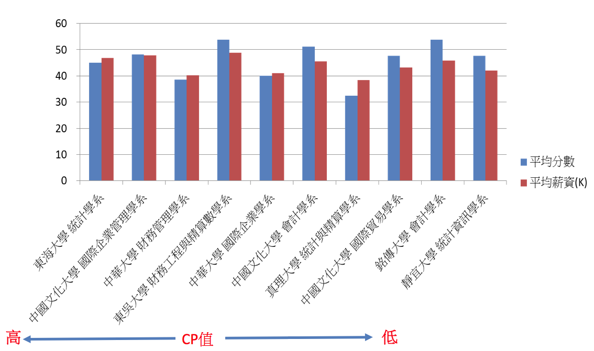
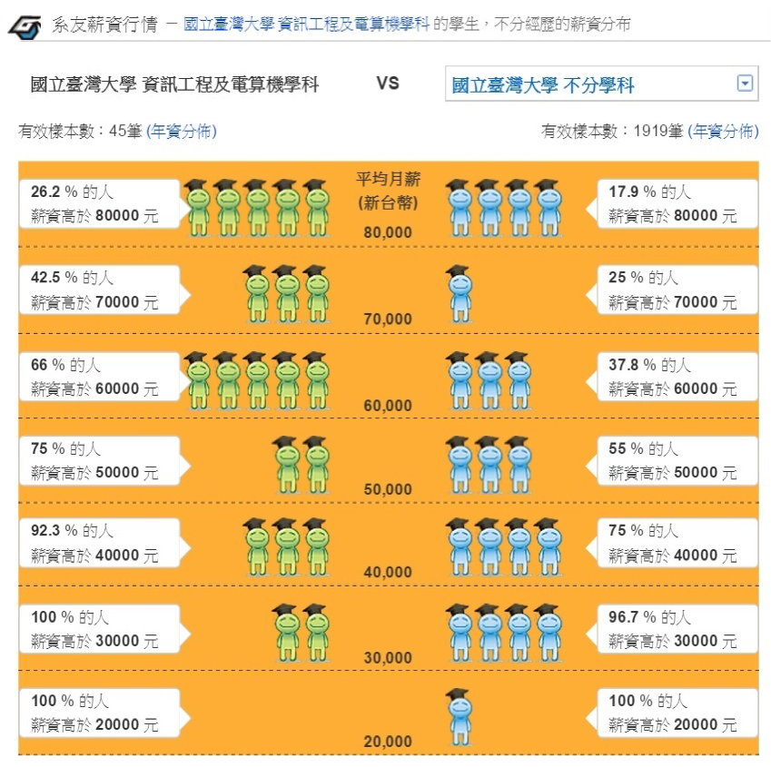

財經學群 CP值分析
-
最高前十名

-
最低前十名

研究方法
一、資料來源
- 薪資資料: 104升學就業地圖-系友薪資行情 http://www.104.com.tw/jb/career/department/
- 指考分數: 大學考試入學分發委員會官網
http://www.uac.edu.tw/103data/103_02.pdf
- 科系資料
- 以103學年度指考校系分則中的校系為基礎
- 刪除104學年度停招的校系
- 刪除104系友薪資行情調查樣本不足的校系
- 共1068個校系
二、平均薪資計算
- 將(薪資級距x該級距人數百分比)加總
- 舉例: 台灣大學資訊工程系平均薪資 =
$80000 x 26.2% +
$70000 x (42.5% - 26.2%) +
$60000 x (66% - 42.5%) +
$50000 x (75% - 66%) +
$40000 x (92.3% - 75%)+
$30000 x (100% - 92.3%)
=$60200

三、平均分數計算
- 最低錄取分數/採計科目加權總計
- 舉例:台灣大學資訊工程系
- 採計及加權: 國x1, 英x1, 數甲x1, 物x1, 化x1
- 103學年度最低錄取分數 = 412.2
- 平均分數(還原單科分數) = 412.2/(1+1+1+1+1) = 82.44
四、CP值計算
- 將平均薪資及平均分數正規化
- 消除薪資和分數數值範圍以及分佈不一致的問題
- C=平均薪資之百分比排名(百分位數)
- P=平均分數之百分比排名(百分位數)
- CP = 薪資百分比排名(C) - 分數百分比排名(P)
- 舉例:台灣大學資訊工程系
- 在1068個校系當中
- 平均薪資勝過1060個校系: C=1060/1068=99.25%
- 指考分數勝過1015個校系: P=1015/1068=95.04%
- CP = 99.25 - 95.04 = 4.21
五、校系CP值排名
- 第一優先: CP值由大到小排序
- 第二優先: 平均薪資由大到小排序
- 第三優先: 平均分數由小到大排序
×